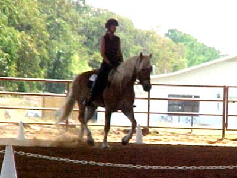
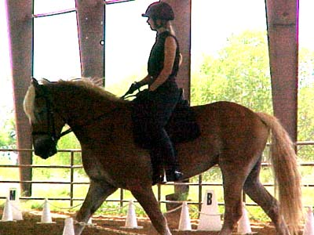
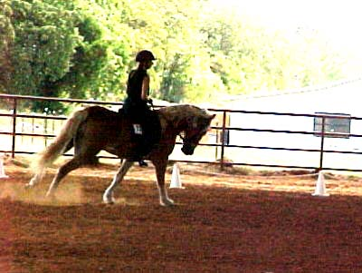
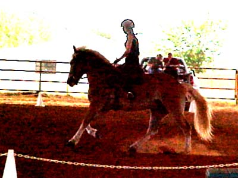

Our First Level Debut We got a 65% and some really good comments.
Definitely stuff to work on, but we had
rhythm. All of the gaits
were nice and steady.
We got an 8 on our stretchy circle and
the two comments were
don't quicken at the lengthen and work
on bend (our circles were a little too large).
Having never done First Level, I was expecting
all sorts of comments suggesting
we were in the wrong place....

We got a 7 on impulsion. He was very
responsive today.

I think we were preparing for the
serpentines.
All of our coefficient movements were
7s or 8s.

From the judge's comment I didn't
do a good job of guessing where the quarterline was. Both canter circles
were a little too big.
Still, 7s on both canter transitions (last
year we mainly got 4s). Big improvement.

Lifting the front end and engaging
the haunches. I think going out with the hunt group has helped.